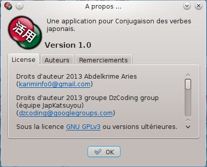
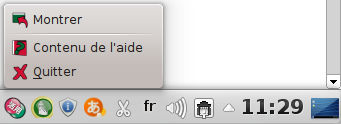

.
Il existe trois formats:
.
Il existe trois formats:
Dans cette application, nous voulons permettre autant de fonctionnalités que nous pouvons, pour aider l'apprenant de langue japonaise dans la conjugaison des verbes japonais. Voici les fonctionnalités offertes dans cette version de l'application: In this application, we want to afford as many features as we can, to help the Japanese language learner conjugating Japanese verbs. These are features afforded in this application's version:
Si vous voulez tester l'existence d'un verbe, il vous suffit de le saisir dans sa forme dictionnaire, puis le conjuguer. S'il est trouvé, vous pouvez voir son type et sa conjugaison. Sinon, vous obtiendrez un message vous indiquant qu'il n'existe pas un tel verbe.
Rappelez-vous, le verbe doit être sous sa forme de dictionnaire (ou form-U). Par exemple: 食べる, 飲む, 行く, 信じる, 死ぬ, 見る, 泳ぐ, 遊ぶ, 出す, 立つ, 合う, etc. Aussi, vous pouvez conjuguer les noms qui forment un verbe avec l'auxiliaire する. Par exemple, 勉強する, 選択する, 連絡する, etc. En fait, c'est juste la conjugaison du verbe する. Après avoir entré le verbe, vous pouvez soit appuyer sur la touche ENTRER (sur le clavier), ou cliquer sur le bouton "conjuguer".
Le résultat de conjugaison est regroupé en trois tableaux. La classification est basée sur la complexité de la conjugaison, et le cas d'utilisation.
Elle est utilisée par les apprenants japonais pour se rappeler la conjugaison des verbes. Si vous voulez apprendre la conjugaison des verbes comme les Japonais le font, c'est le bon choix pour vous.
Presque le même que "conjugaison standard", mais il inclut la forme T. Ce type de conjugaison offert les différents radicaux qui sont combinés avec d'autres suffixes pour obtenir des formes plus complexes. Ces formes sont: l'inaccompli, hypothétique, Impératif, conjonctive, Terminal, et attributive.
Les formes complexes sont générés à partir des formes de base suivis par des suffixes. La conjugaison complexe suit trois axes:
Vous pouvez enregistrer le contenu de conjugaison, soit en l'imprimant ou en l'exportant vers un fichier. Après conjugaison, vous pouvez exécuter ces deux fonctions à partir du menu "Fichier", ou de la barre d'outils. Vous pouvez choisir les tableaux que vous souhaitez enregistrer dans les Préférences.
Pour exporter le contenu de conjugaison, sélectionner le menu "Exporter le contenu", ou appuyer sur le bouton
.
Il existe trois formats:
Pour imprimer le contenu de conjugaison, sélectionner le menu "Imprimer", ou appuyez sur le bouton
 .
.
Vous pouvez contrôler la taille des tableaux de conjugaison.
Vous pouvez agrandir à partir du menu "Affichage-> Zoom-> Zoom avant", ou en appuyant sur le bouton
Vous pouvez effectuer un zoom arrière à partir du menu "Affichage-> Zoom-> Zoom arrière", ou en appuyant sur le bouton

Vous pouvez rétablir la taille normale à partir du menu "Affichage-> Zoom-> Taille normale", ou en appuyant sur le bouton

C'est ici que vous pouvez contrôler les préférences de l'application.
Vous pouvez obtenir la boîte de dialogue "Préférences", soit à partir du menu "Edition-> Préférences", ou en appuyant sur la touche
 .
Les préférences sont divisées en deux groupes: l'interface utilisateur et l'export du contenu.
.
Les préférences sont divisées en deux groupes: l'interface utilisateur et l'export du contenu.
Vous pouvez choisir la langue de l'application. Lorsque vous appuyez sur le bouton OK, la langue va changer immédiatement.
Dans ce panneau, vous pouvez contrôler le contenu que vous souhaitez enregistrer (export ou impression). Vous pouvez choisir les tableaux exportés, et si vous voulez qu'ils prennent un style ou non.
Vous pouvez trouver cette aide en sélectionnant le menu "Aide-> Contenu de l'aide", ou en appuyant sur le bouton
 .
.
Si vous souhaitez obtenir des informations sur JapKatsuyou,
vous pouvez sélectionner le menu "Aide-> A propos", ou en appuyant sur le bouton
 .
.

Vous pouvez fermer l'application dans la barre de tâches, en sélectionnant "Fichier-> Cacher" ou en appuyant sur le bouton de fermeture.
Si vous souhaitez quitter l'application, vous pouvez sélectionner le menu"Fichier-> Quitter", ou appuyer sur le bouton
 .
.
Si vous voulez restaurer l'application à partir de la barre de tâches,
un clic gauche sur l'icône de l'application, ou un clic droit en dessus puis appuyer sur le bouton
 .
.
